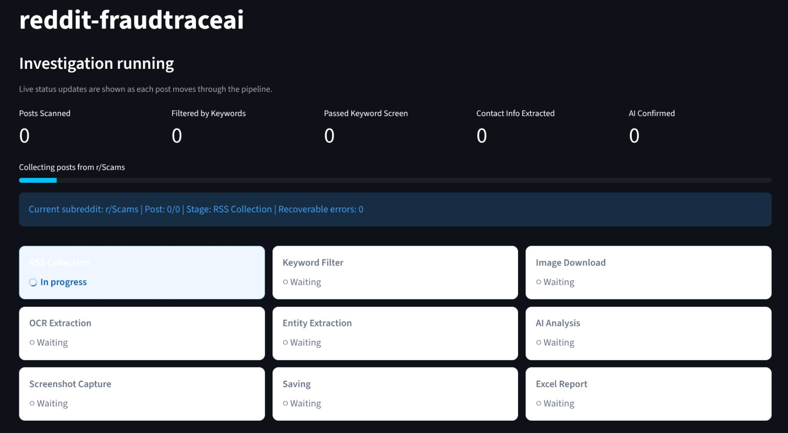
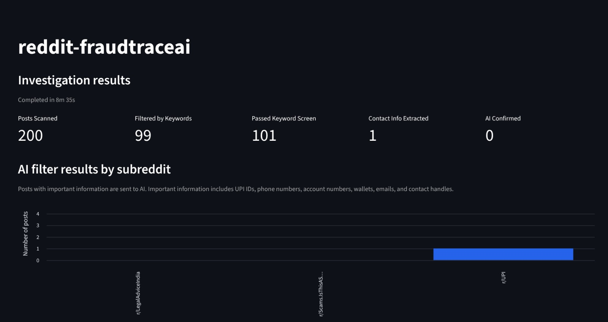

Reddit FraudTrace AI
A review workflow for potential UPI scam reports. A local investigation dashboard that reviews public Reddit posts for potential UPI-payment scam reports by combining Reddit collection, keyword screening, OCR and QR extraction, entity detection, AI-assisted classification, browser evidence capture, and Excel reporting.
Scope note: The application surfaces potential scam reports for review. An extracted identifier, AI classification, or captured screenshot is not proof of fraud, identity, ownership, or criminal activity. Findings require human review and appropriate handling.
Overview
Reddit FraudTrace AI is a local Streamlit application designed to streamline the first stage of reviewing public Reddit scam reports. An investigator chooses one or more subreddits, the number of posts to review, and a time range. The workflow collects public post data, filters it for UPI-related signals, extracts potential identifiers from text and images, asks an AI model for a constrained classification, and saves only AI-confirmed, screenshot-backed cases to an Excel report and local evidence folders.
Problem & Objective
Scam reports on public forums can contain useful indicators—such as UPI IDs, phone numbers, account numbers, email addresses, crypto-wallet addresses, or contact handles—but reading posts and attached images manually does not scale well.
The objective was to build a local, repeatable review workflow that can:
- Let an investigator target selected public subreddits.
- Limit the volume of posts examined per subreddit and apply a date-range filter.
- Screen posts for UPI-related language before using more expensive processing.
- Extract possible contact and payment identifiers from post text, downloaded images, OCR output, and QR codes.
- Use an AI model only after a post passes the initial screens.
- Preserve screenshot-backed evidence and export a structured Excel report for human review.
Implemented Features
- Investigation setup screen: Accepts a comma-separated list of subreddits, a 10–200 posts-per-subreddit limit, and a selectable time range.
- Public Reddit collection: Retrieves subreddit RSS entries and requests full public post text through the related Reddit JSON endpoint. The implementation uses public endpoints rather than a Reddit API key.
- Incremental collection: Stores the last-seen post per subreddit so later runs can stop when they reach already processed posts.
- Time-range filtering: Supports Latest, Last 7 Days, Last 30 Days, Last 90 Days, and Last 1 Year selections where feed date metadata is available.
- Keyword screening: Filters posts using UPI-related keywords before deeper processing.
- Image, OCR, and QR processing: Downloads available post thumbnails, extracts text with EasyOCR, and attempts to decode QR content with OpenCV and ZBar/pyzbar.
- Entity extraction: Looks for UPI IDs, phone numbers, bank-account numbers, email addresses, wallet addresses, contact handles, and URLs.
- Constrained AI review: Sends qualifying text to Groq using the configured
model and requests a strict JSON classification for the single supported category,
UPI Payment Scam. - Evidence gate: A record is saved only after it contains an extractable UPI ID, receives an AI scam confirmation, and receives a browser screenshot of the source post.
- Live progress dashboard: Shows pipeline stages, post counts, recoverable errors, and the currently processed subreddit/post.
- Results and export: Provides a results view, per-subreddit comparison chart, record detail view, local evidence folders, and an Excel report.
Architecture & Workflow
Streamlit investigator dashboard
│ subreddit names, post limit, time range
▼
Python investigation pipeline
│
├─ Public Reddit RSS + post JSON collection
├─ Time-range and UPI-keyword screening
├─ Image download → EasyOCR + QR decoding
├─ Entity extraction (UPI, phones, accounts, wallets, email, handles)
├─ Groq AI classification for posts containing a UPI ID
├─ Selenium browser screenshot for AI-confirmed posts
└─ Local evidence + Excel report + Streamlit resultsThe interface calls a local controller and worker, which run the Python pipeline in the same application environment. It is an investigation-assistance workflow, not a public, multi-user, or production-hosted service.
Technology Stack
| Area | Implementation present in the project |
|---|---|
| Application UI | Streamlit |
| Core workflow | Python |
| Public data collection | requests, feedparser, Beautiful Soup, public Reddit
RSS and JSON endpoints |
| AI classification | Groq API with llama-3.3-70b-versatile configured in the supplied
source |
| Image intelligence | EasyOCR, OpenCV, pyzbar/ZBar |
| Browser evidence | Selenium and Chrome/Chromium driver |
| Export | openpyxl-generated Excel workbook |
| Configuration | .env via python-dotenv |
Product Walkthrough & Screenshots
Use the screenshots below as a product walkthrough. The displayed figures show example local investigation sessions and are not universal performance metrics.

The investigator selects public subreddits, the post limit per subreddit, and the review time range before starting an investigation.

A live workflow view reports the active subreddit, current pipeline stage, post progress, recoverable errors, and queued processing steps.

The completed investigation summarises posts scanned, keyword-screen results, extracted contact information, AI confirmations, and results by subreddit. The values shown are from an example session.
Design Considerations & Challenges
Reducing the review burden
The workflow uses progressive screening: time range, keyword filter, identifier extraction, then AI classification. This avoids sending every collected post to an AI model and concentrates processing on posts that contain UPI-related signals.
Handling unstructured evidence
Scam reports can place important details in plain text, screenshots, or QR codes. The pipeline combines post text with OCR and QR-decoded text before extracting entities, while preserving local evidence for successfully saved cases.
Avoiding false certainty
The AI is constrained to a specific JSON output and the supported report category is limited to
UPI Payment Scam. Still, the result is a triage signal, not a factual or legal
determination; a human must review the underlying post and evidence.
Making evidence reproducible
The application records source links, extracts identifiers, captures a screenshot for a qualifying case, and exports an Excel report. It also tracks last-seen Reddit entries to avoid needlessly repeating processing across later runs.
Current Status & Honest Limitations
Implemented in the supplied source: the Streamlit UI, public Reddit collection, time and keyword filtering, image download, OCR, QR extraction module, entity extraction, Groq-backed AI classification, Selenium screenshot workflow, local evidence storage, Excel export, and investigation-result views.
Important limitations to present honestly:
- AI confirmation requires a valid
GROQ_API_KEYin a local.envfile. Without it, the pipeline can collect and screen posts, but AI confirmation fails and no confirmed cases are saved. - The source uses public Reddit RSS and post JSON endpoints; availability, rate limiting, removed posts, and subreddit access can affect a run. It does not use a Reddit API key.
- The current browser configuration contains Linux-specific Chromium and profile paths. It needs Windows-compatible Chrome/Chromium configuration before screenshot capture can reliably run on Windows.
- The QR module depends on ZBar/pyzbar native DLLs. On Windows, the required ZBar dependencies must be installed and load correctly; otherwise the app must gracefully disable QR decoding rather than fail at startup.
- The app labels its status cards as ready without actively validating the Groq key or browser setup. Those cards should not be treated as a successful dependency check.
- The pipeline deliberately saves a case only after an extractable UPI ID, AI confirmation, and screenshot capture. This makes the saved result set more selective, but a lack of saved cases does not mean no scam-related posts exist.
- No verified detection-rate, accuracy, financial-loss-prevention, or user-adoption metrics were found in the supplied source. Do not add numerical impact claims without measured evidence.
Explore the Source Code
The full code for the Reddit FraudTrace AI review workflow, Streamlit dashboard, extraction logic, and export pipeline is available on GitHub.